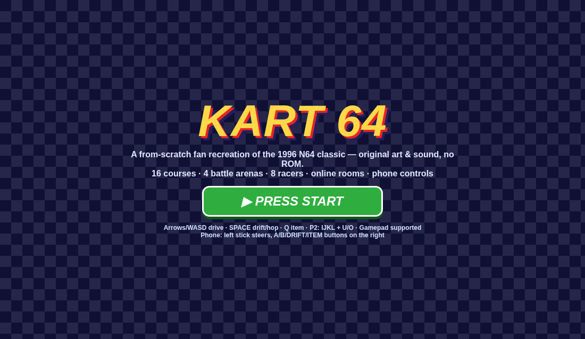

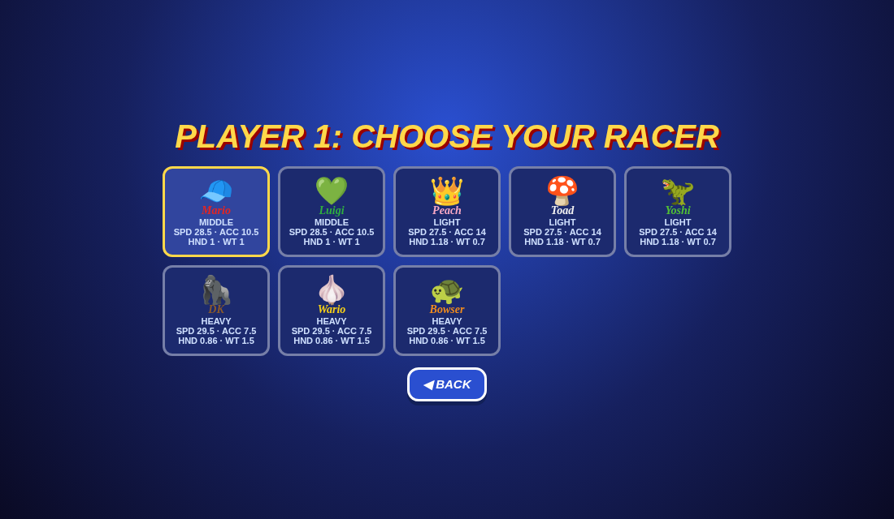
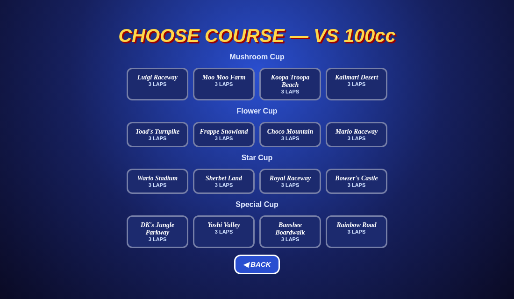

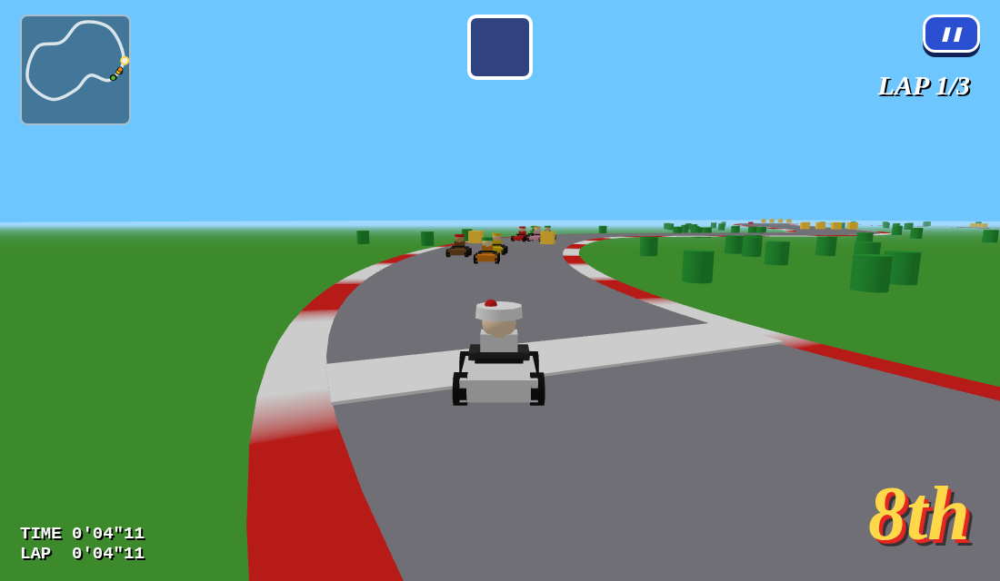
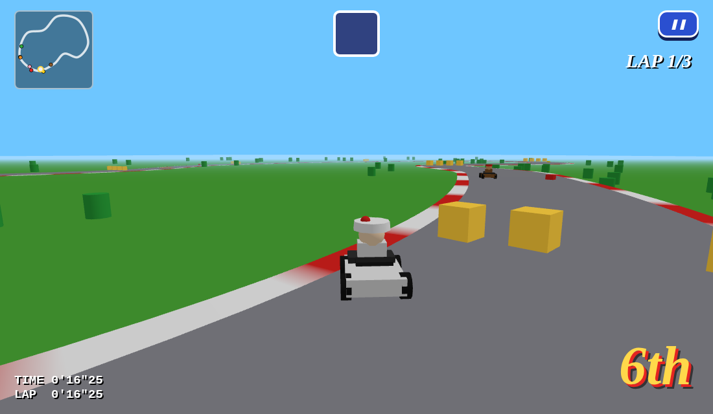
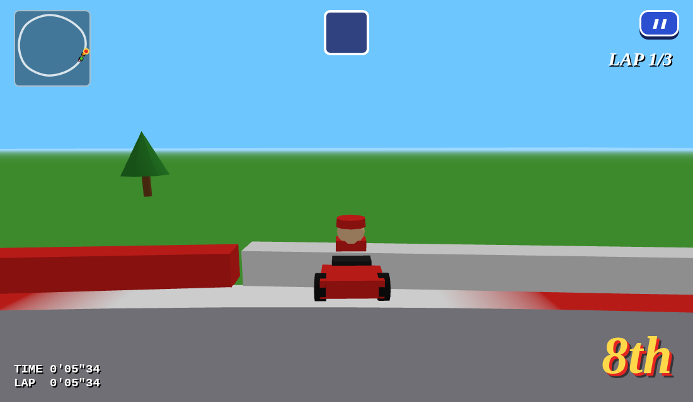
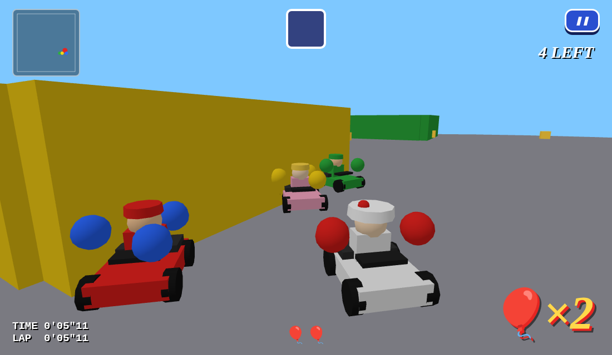
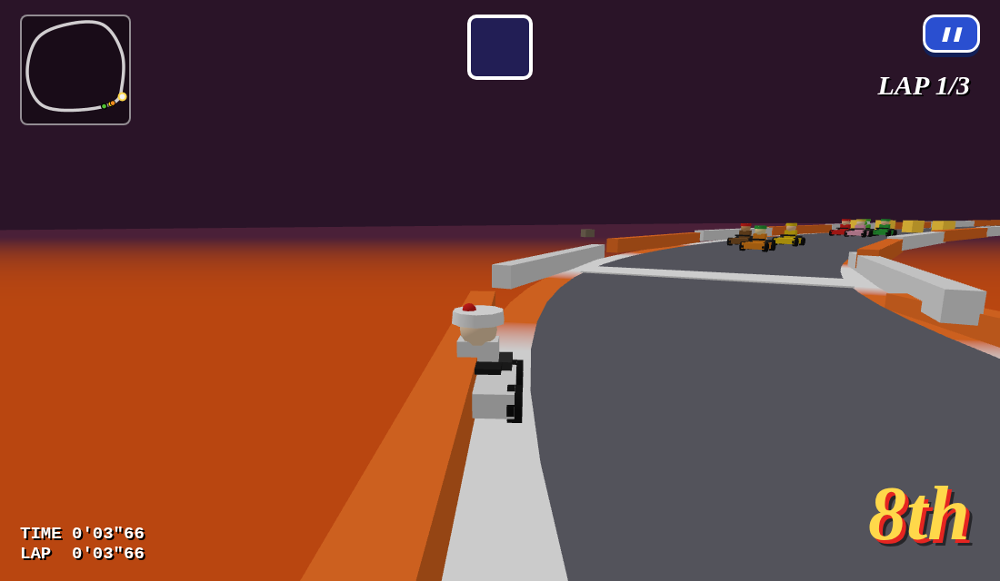
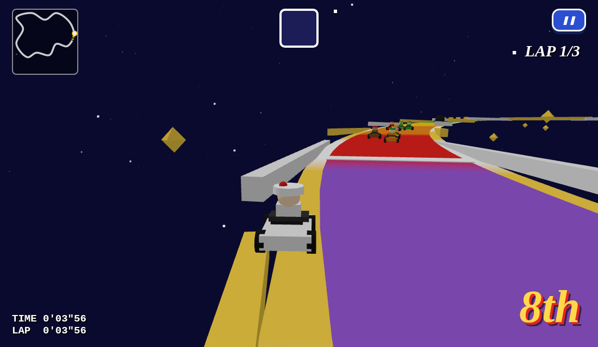
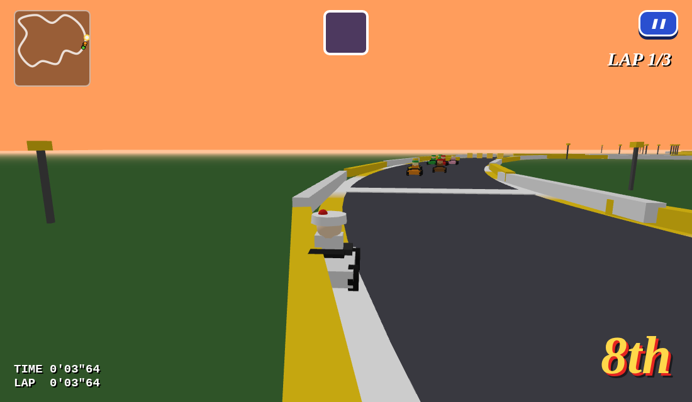
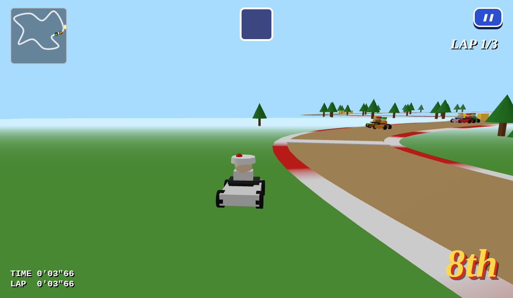
Reference: Super Mario Wiki / Mario Kart Wiki descriptions & screenshots (viewed online, not redistributed — see ../../reference/REFS.md). Checklist scored each round: title → mode → players → engine → character select (8 racers, class stats) → cup/course select; race HUD (big position ordinal bottom-right, LAP top-right, timer bottom-left, item slot top-centre, mini-map top-left, countdown lights); per-course theme colours, hazards, walls/falls; battle balloons; lap pace vs staff-ghost targets (Mario Raceway ≈30s/lap expert). Round findings & fixes are logged in ../../COMPARISON.md.










